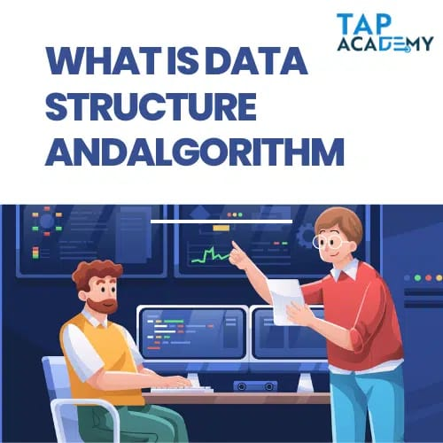

What is Data Structure and Algorithm?
You may already know that computers are used to store and modify massive amounts of data. Data structures are used to efficiently and conveniently arrange and store data.
Organizing and storing data in a computer so that it can be accessed and used effectively is known as a data structure. In addition to defining the relationships between data pieces, it offers a means of representing and storing data. Common data structures include trees, stacks, queues, linked lists, arrays, and stacks.
Now, an algorithm is a set of guidelines or procedures used to complete a task or solve a problem. To get a certain outcome, algorithms are used to alter data that is stored in data structures. Data in an array or linked list can be sorted using a sorting algorithm, for instance.
Data structures and algorithms are closely associated in computer science because an algorithm’s effectiveness frequently depends on the selection of an effective data structure. An algorithm can become more effective and quick with the right data format. For instance, a hash table is a popular data structure for quick data retrieval and searching.
It is impossible to emphasize the significance of data structures and algorithms in computer science. Writing effective computer programs requires an understanding of these fundamental ideas, which serve as the cornerstone of software development.
For example, suppose you are creating software to look for a specific name in a large client database. Your program’s effectiveness will be influenced by the algorithm and data format you choose. Your software could take a long time to finish the search if you pick a poor data structure or technique. Yet, your program will run more quickly and efficiently if you select an effective data structure and algorithm.
What are Data Structures and types?
Data structures are specific methods for setting up and keeping data in a computer so that it may be accessed, changed, and searched quickly. There are many different kinds of data structures, and each has benefits and drawbacks that vary depending on the objectives of the application.
1. Arrays
Arrays are a type of data structure that keep a group of identically categorised elements in close proximity to one another in memory. Despite having a fixed size, they can be ineffective for dynamic data or big datasets since they require constant-time access to individual items via an index.
Pros:
1.Index-based constant-time access to individual elements
2.For tiny, fixed-size data sets, effective
3.Simple to use and understand
Cons:
1.Uniform size
2.Ineffective for large or dynamic data set
Examples:
a list of contact details
a list of test results
2. Linked Lists
Linked lists are a type of data structure that are made up of a series of nodes, each of which contains an element and a reference to the node after it in the list. They are distinguished by their speedy insert and delete of elements, but because of their non-contiguous memory allocation, their traversal may be slower than arrays.
Pros:
1.Effective element addition and deletion
2.Varying size
3.Memory-efficient
Cons:
1.Traversing more slowly than arrays
2.Less effective for gaining access to specific elements
Examples:
1.a musical playlist
2.books listed
3. Stacks and Queues
Data structures used for handling a group of components include stacks and queues. The LIFO (last-in, first-out) ordering of stacks distinguishes them from queues, which are distinguished by the FIFO (first-in, first-out) ordering.
Pros:
1.Easy to implement and comprehend
2.Effective element addition and deletion
Cons:
1.Limited access to certain features
2.Ineffective for sorting and searching
Examples:
1.In text editors, stacks can be utilized for the undo/redo capability.
2.In a printer queue, queues can be used to manage print jobs.
4. Trees
Trees are a type of hierarchical data structure that is made up of nodes and edges. There is one node known as the root that has no parents, and each node can have one or more children. The ability to efficiently explore and arrange data in a hierarchical fashion is a characteristic of trees.
Pros:
1.Effective data sorting and searching
2.Useful for displaying hierarchical relationships
Cons:
1.Unable to handle dynamic data
2.Difficult to implement and comprehend Examples
Examples:
1.The computer’s file system
2.A company’s organizational chart
5. Graphs:
A graph is a data structure made up of nodes (vertices) and the connections between them (edges). They are useful for modelling networks, social media connections, and a variety of other tasks because they can depict intricate interconnections between data.
Pros:
1.Modular and effective for simulating intricate interactions
2.Can depict a variety of real-world scenarios.
Cons:
1.Difficult to implement and comprehend
2.Large data sets’ search and sorting efficiency is poor
Examples:
1.Using social media
2.Road systems
What are Algorithms and types?
Algorithms are a collection of instructions or rules that must be followed in order to complete a task or solve an issue. There are many different kinds of algorithms, and each has benefits and drawbacks that vary depending on the particular issue being solved.
1. Sorting Algorithms
Sorting algorithms are employed to categorize and organize the elements of a list or an array. Several of the most popular sorting formulas include:
1.Bubble Sort:
If two adjacent elements in a list are in the wrong order, Bubble Sort compares them and swaps them. It goes over the list several times until no more swaps are required.
2.Selection Sort:
The smallest entry in the list is chosen and placed at the top of the list using the selection sort algorithm. The method is then repeated for the remaining list items.
3.Insertion Sort:
This sorting method begins with one element in the list and inserts each additional element into the list in the appropriate location in relation to the sorted portion.
4.>Quick Sort:
Quick Sort chooses a pivot element and divides the list into two parts, placing elements on one side that are smaller than the pivot and elements on the other that are larger than the pivot. After that, it sorts each of these components repeatedly.
Merge Sort: Merge Sort splits a list into two parts, sorts each half independently using recursive steps, and then combines the two sorted parts.
Pros:
1.Able to sort huge datasets effectively
2.Large-scale data analysis and search useful; can be tailored to meet certain requirements
Cons:
1.For small datasets, some sorting techniques can be ineffective.
2.Certain algorithms need more processing power or memory
2. Searching Algorithms
Searching Algorithms:
are employed to locate a particular element in a list or an array. The following are some of the most popular search algorithms:
To find the desired element or to get to the end of the list, a linear search iterates through the list element by element.
Binary Search divides the list into two halves, compares the middle element with the target element, and then repeatedly searches the relevant half of the list.
Pros:
1.An effective search of big datasets
2.Useful for locating specific list items
3.Can be modified to meet particular demands
Cons:
1.Certain search algorithms demand that the list be sorted first.
2.If the required element is not present in the list, some algorithms may fail to find it.
3. Recursive Algorithms
Recursive algorithms are those that call themselves in order to solve a problem. They can be applied to a wide range of issues, including search and sorting algorithms.
Examples:
Using the Fibonacci sequence to traverse a binary tree
Pros:
1.Able to solve challenging issues
2.Can some cases be more effective than non-recursive algorithms
3.For some issues, it might be simpler to comprehend and put into practice.
Cons
1.Potentially memory-intensive compared to non-recursive algorithms
2.May some circumstances be less effective than non-recursive algorithms
4. Greedy Algorithms
Greedy Algorithms:
In order to achieve a globally optimal solution, greedy algorithms choose the locally optimal option at each step. They are frequently employed for optimization issues.
Examples:
1.The issue with coin exchange
2.Dijkstra’s shortest path algorithm
Pros:
1.Able to solve problems fast
2.Frequently offer accurate approximations to ideal answers
3.Can be applied to a variety of issues
Cons:
1.May not always come up with the world’s best answer
2.It can be challenging to decide when a greedy algorithm is necessary.
5. Dynamic Programming Algorithms
Algorithms for Dynamic Programming: Dynamic programming algorithms divide a problem into smaller subproblems and solve each subproblem just once. They can be more effective than brute force techniques and are frequently employed for optimization challenges.
Examples:
1.The issue with knapsacks
2. Longest common sequence issue
Pros:
1.Can effectively tackle complicated problems
2.Can be applied to a variety of issues
3.Frequently offer ideal answers
Cons:
Can be challenging to use and comprehend